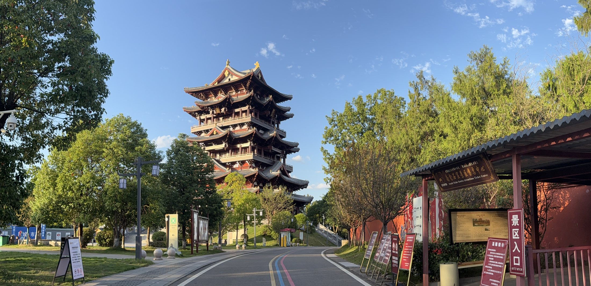

01
红军将士英名纪念碑
园区核心。碑体总高十六米，碑顶至碑文龛上口一点九三二米，对应一九三二年红军入川。

从山门到山顶，碑、廊、像、馆次第铺开，像一本摊开在石头上的名册。
碑林园区占地一百二十余亩，十七处露天展示区依山就势、错落排布。四千五百八十余块碑嵌在山坡与廊柱之间，其中红军将士个人纪念单碑三千二百三十七块。
参观不必赶路。从“将帅碑林”大门拾级而上，先遇标志碑，再见英名纪念碑；绕碑一周，是十四万个名字组成的环形碑墙；再往深处，是红柱长廊与将领雕像园。

“将帅碑林”石 · 山门内
按参观顺序排列，编号对应园区主要节点。
园区核心。碑体总高十六米，碑顶至碑文龛上口一点九三二米，对应一九三二年红军入川。

碑墙呈圆环合抱，姓名以籍贯为序排列，十四万零八百二十个名字绕碑一周。

红柱回廊沿山势上行，两侧立三千二百三十七块将士个人纪念碑，碑上刻像、刻名、刻生平。

红四方面军主要将领的石雕半身像依次而立，是园区最具肖像感的一处。

碑身正面刻《红四方面军战斗历程路线图（1927—1937）》，碑顶一簇火焰，是园区的方位坐标。

与碑林同属一个纪念馆体系，馆藏革命物品一万五千余件，可看到红旗、武器与手迹。

同在南山，唐代龛窟层叠，是巴中最古老的石刻。红色碑林与千年造像，一山两景。

山顶楼阁，可俯瞰巴中城。傍晚登临，霞光落在碑林与城区之间。
单碑长廊的每一块碑，都是一份压缩的人生：姓名、籍贯、生卒、任职，配一幅线刻肖像。有的碑上只有寥寥数行，有的则密密写满。
再往上看，碑墙上的名字按县、按乡排下去。你很容易在其中找到同一个姓氏连着出现——那往往是一家人，兄弟几个一起参了军。
读几个名字 →
展厅中的将士生平